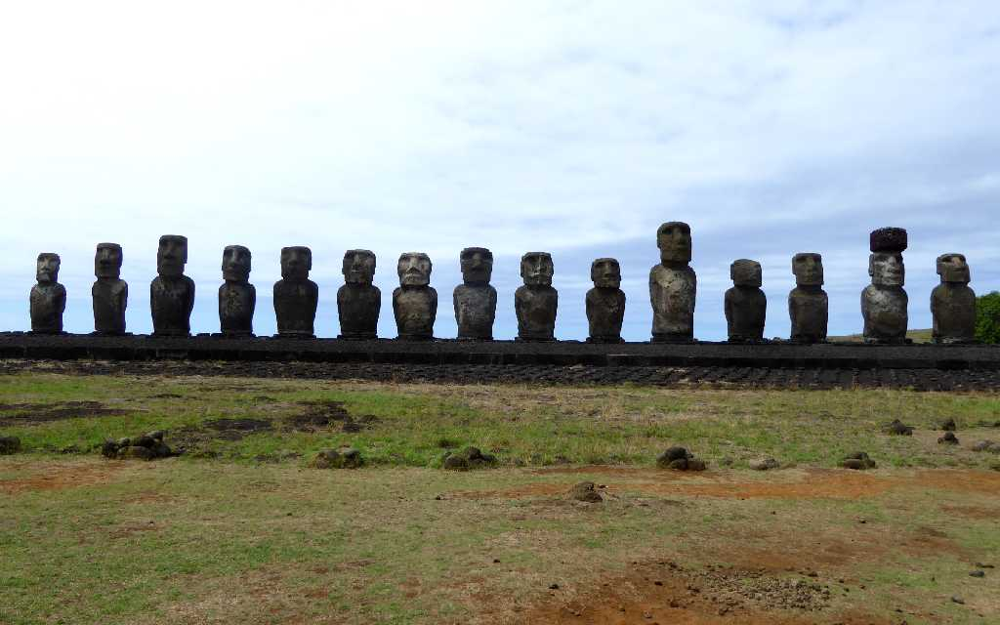
Ahu Tongariki Rapa Nui
ポリネシアトライアングルの東端にあるイースター島は最も近い有人島まで２,０００km以上ある絶海の孤島で周囲には島は見当たらない
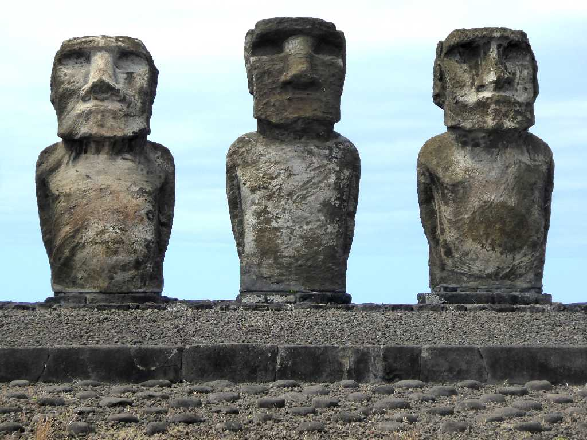
Moai Ahu Tongariki
７世紀頃からプラットホーム状に造られる様になった石の祭壇Ahuの上に１０世紀頃から造られる様になったモアイ像Moai
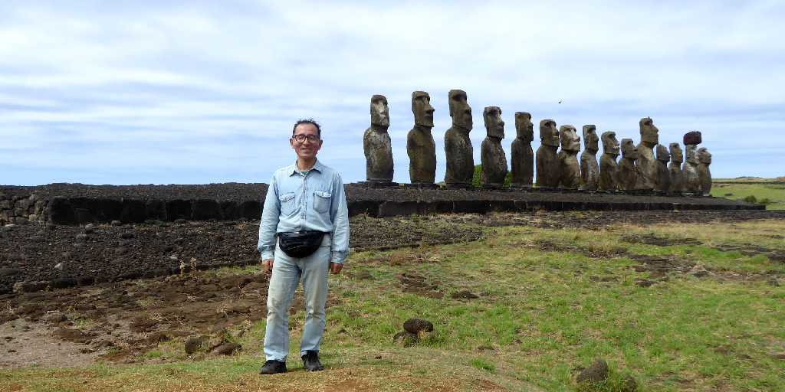
March 5 2016 Ahu Tongariki Rapa Nui
イースター島にある祭壇に立ち並ぶモアイ像３０体のうち１５体が並ぶアフトンガリキのモアイ像群は祭壇の長さ１００ｍモアイ像の高さ５～７ｍ重さ最大８０ｔほどある
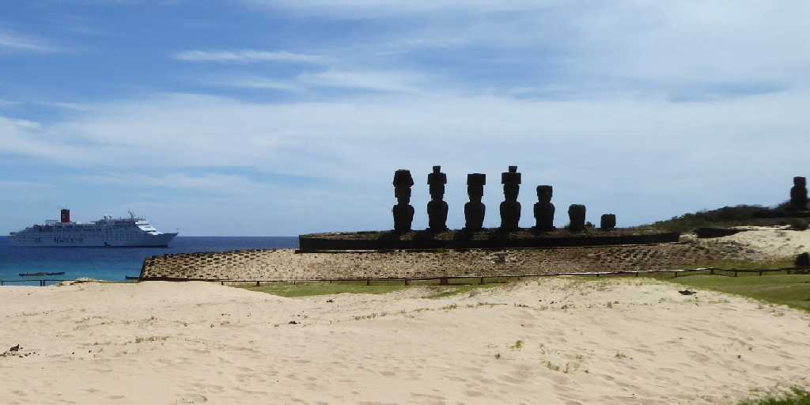
Anakena Rapa Nui
地球一周の船旅出港８０日目３７,４１８km航行しイースター島沖に碇泊後テンダーボートで上陸
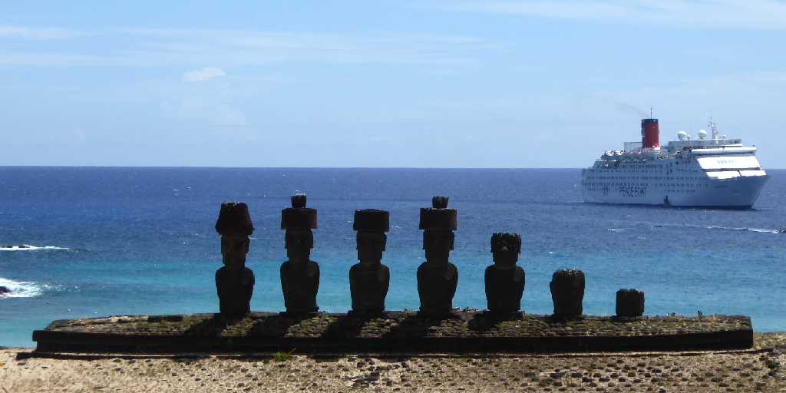
Ahu Nau Nau Anakena
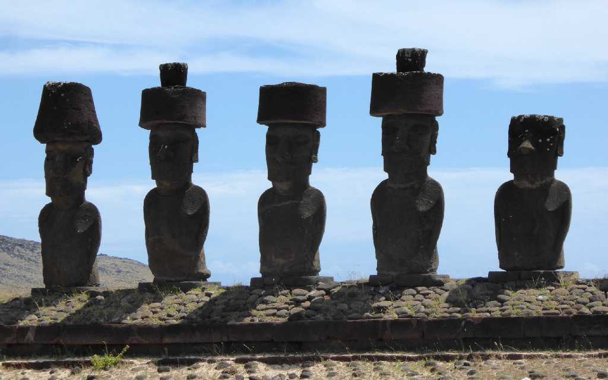
Moai Ahu Nau Nau
モアイの髪の毛プカオを付けた４体のモアイ像が並ぶアフナウナウは砂の中から復元されたため保存状態がよくモアイの目もここで発見された
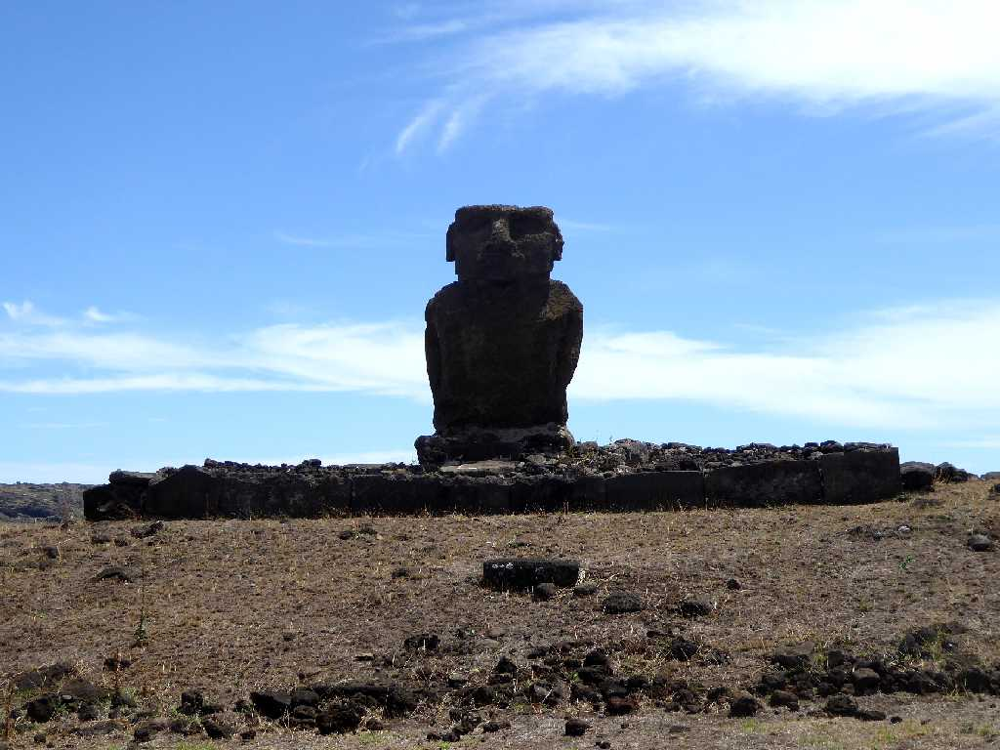
Ahu Ature Huki Anakena
１９５６年に初めて復元されたモアイ像
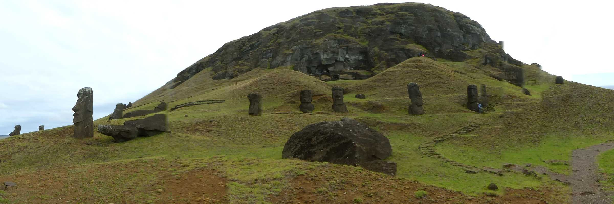
Rano Raraku Rapa Nui
ラノララクはモアイ像を造った石切場で完成する前のモアイ像が観られる
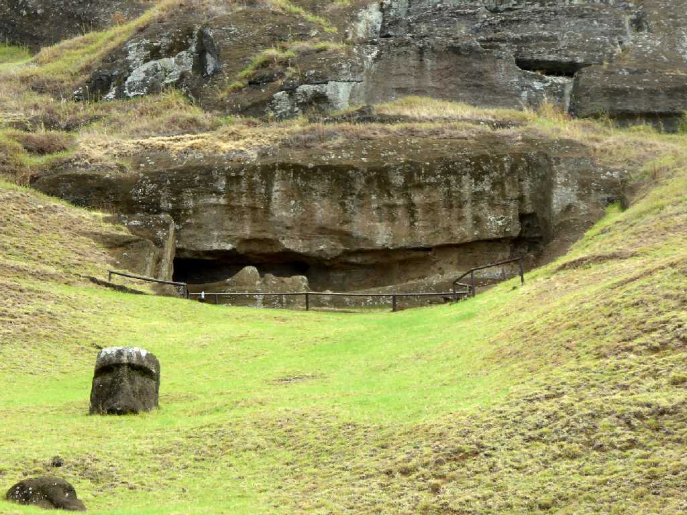
Unfinished Moai and Biggest Moai Rano Raraku
切り出し中ではあるが最も大きなモアイ像で完成すれば２４ｍほどにもなる
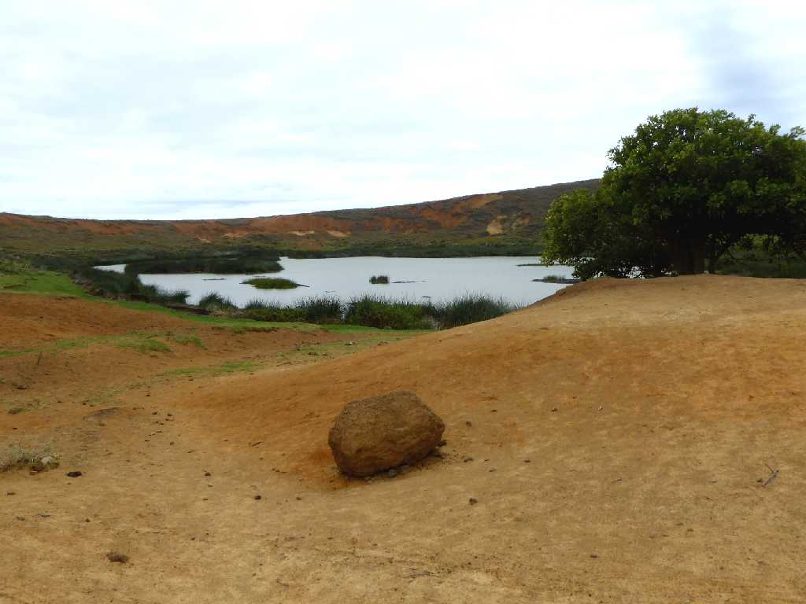
Crater Rano Raraku
石切場の火山の火口に出来た貴重な淡水の火口湖
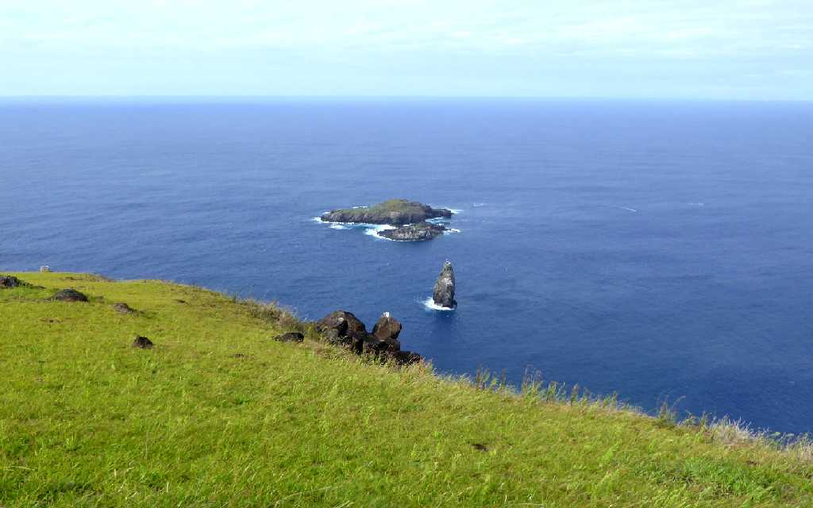
Orongo Rapa Nui
オロンゴ岬より鳥人伝説が残る海鳥が生息する島を望む


 AI解説
AI解説